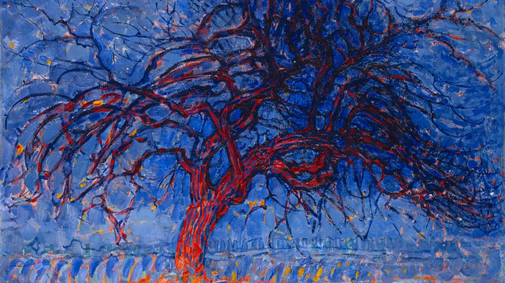

My experience, after working with AI on two major open problems in Mathematics
What I learned from working with AI on Erdős Problems #1038 and #36: multi-agent orchestration, cross-model collaboration, and the role of human ideas in mathematical research.
Read on LinkedIn